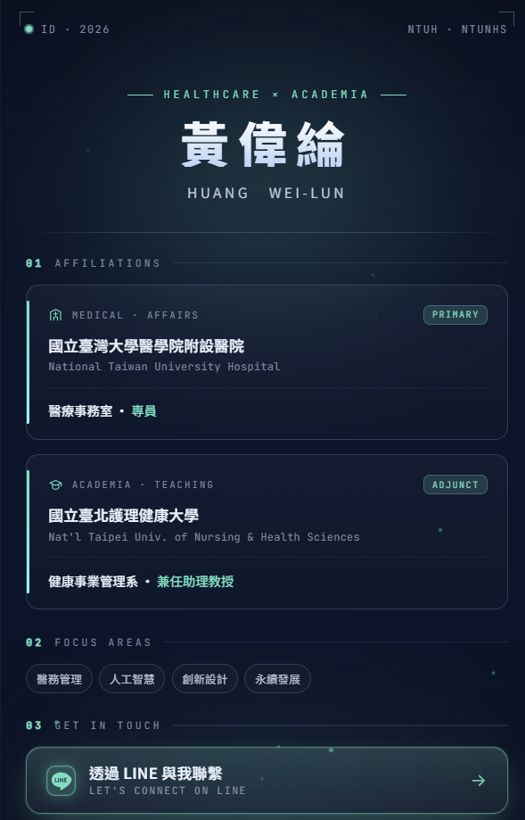

作品 · Web應用
個人數位名片
2026.05 · 個人專案

FIG. 43 — 產品主畫面
關於這個作品
個人數位名片以手機閱讀為優先，將醫療與教學的雙重職務、專業關注領域與聯絡方式濃縮在單一頁面。
介面透過深色科技風格、動態粒子背景與清晰 CTA，讓訪客能快速理解個人定位並直接以 LINE、電話或 Email 聯繫。
作品亮點
一頁式呈現雙職務與專業定位
LINE、電話與 Email 直接聯絡
行動優先版型與響應式設計
動態粒子背景與科技風格視覺